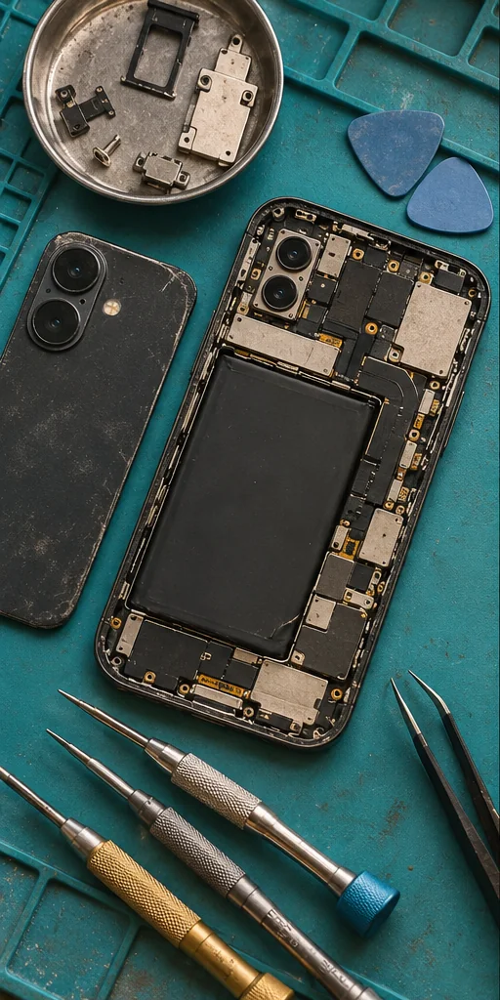

Kéo dài tuổi thọ pin điện thoại
Một ngày sử dụng ngắn đi có thể đến từ pin đã lão hóa, màn hình đặt quá sáng hoặc ứng dụng chạy nền. Trước khi cân nhắc thay pin, hãy mở thống kê theo ứng dụng và so sánh hai ngày có cùng kiểu sử dụng. Để ý cả những khoảng điện thoại nằm yên trên bàn.
Khi thử thay đổi, chỉ chỉnh một thứ mỗi lần: giảm thời gian sáng màn hình, tắt đồng bộ cho một ứng dụng ít dùng hoặc kiểm tra chất lượng sóng tại nơi làm việc. Tín hiệu yếu có thể khiến máy tiêu hao pin nhanh hơn. Ghi lại thời gian sử dụng thay vì chỉ nhìn phần trăm vào cuối ngày.
Máy nóng bất thường, vỏ phồng hoặc màn hình bị đội là lý do để ngừng sạc và mang máy tới nơi kiểm tra. Hãy sao lưu dữ liệu trước khi giao máy và hỏi rõ về bảo hành, thời gian sửa và khả năng giữ lại dữ liệu.